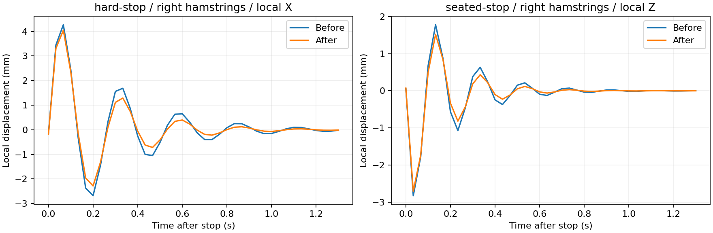

腿部 Jiggle：论文参考与小幅阻尼调整
本轮做了什么
保留你已认可的腿部形态、连续权重和姿态平衡方案，仅增加默认阻尼及重置值。大腿 0.30 → 0.40；小腿 0.40 → 0.55。振幅仍为 3，支撑仍为 0.85，频率、区域节点、被动张力和耦合不变。
这是参考研究方向后进行的工程微调，不是人体材料参数实测拟合。没有新增主动肌肉激活模型，也没有用增大刚度压住所有晃动。
论文提供的依据
- Wakeling & Nigg，2001：腿部振动频率、阻尼与肌肉收缩有关，也存在方向差异。不能只根据膝盖弯曲角度断定主动肌肉张力。原始研究摘要
- Wakeling 等，2002：接近组织共振时，肌肉活动和阻尼增大；自然频率未按输入频率作对应改变。支持本轮先试阻尼。原始研究摘要
- Boyer & Nigg，2006：同一股四头肌区域的不同测点，峰值与出现时间不同，主导频率却接近。因此保留区域节点，而非整条腿完全同相运动。原始研究摘要
- Behling 等，2021：分析了 32 名跑者，小腿内侧腓肠肌主导频率约 10.4–10.5 Hz；个体差异和测试条件不能忽略。原始研究全文
- Dyna，SIGGRAPH 2015：用动作历史、身体/肢体速度与加速度、体型预测软组织形变。与保留惯性和历史状态的方向一致，本轮没有接入 Dyna。作者项目页
不能直接抄论文数字
2021 年研究用 exp(-c·t) 描述功率衰减，信号幅度按 exp(-c·t/2) 衰减；c 的单位是 s⁻¹。它不是我们界面中的无量纲阻尼倍率，也不是质量—弹簧方程中的粘性阻尼系数。方法说明
对当前孤立线性节点，近似有效阻尼比为 profile ζ × damping / √support。基础 ζ=0.35 时，大腿约 0.114 → 0.152，小腿约 0.152 → 0.209。胫骨前肌的基础 ζ=0.5，另有差异。实际还有耦合、被动张力、限幅和数值积分，所以最终使用录制后的衰减作判断。
现有模型表现较大范围、较低频的表面运动；跑步冲击下的加速度频谱不能直接当作它的目标频率。本轮频率未强行调至实验小腿均值。主动肌肉状态、体型相关频率与方向性标定，仍需要后续数据支持。
实际急停结果
下表是停止后，五个节点中的最大位移偏差最后一次超过该次余振峰值 10% 的时间；不是医学上的组织松弛常数。采样间隔约 0.033 秒。
| 状态 | 上一版 | 本轮 |
|---|---|---|
| 站立急停 · 右大腿 | 0.700 s | 0.500 s |
| 站立急停 · 右小腿 | 0.433 s | 0.400 s |
| 坐姿急停 · 右大腿 | 0.433 s | 0.333 s |
| 坐姿急停 · 右小腿 | 0.367 s | 0.267 s |
坐姿运动固定大腿区域的最大相邻面夹角：24.54° → 24.53°。新版超过 45° 的帧数为 0 / 210。该几何审计由真实 A1 表面、实际量化权重和固定姿态下的骨骼平移重建，已校验旋转不变；不冒充每帧 GPU 网格读回或全局自交测试。
每个并排视频的主骨骼矩阵最大差为 0，相机、灯光和采样时间一致。每段 7 秒、210 帧、30 fps，模拟步长 1/60 秒；这不是性能帧率测试。Contact 关闭，Glute / Leg Jiggle 开启，Breast Jiggle 关闭。屈伸和原地迈步在 4 秒停止，根节点急停在 3 秒停止；原地迈步不含落脚接触。
验证与使用
UE 编译、资产 build/reload/verify、15 项相关回归已通过。主工程 Editor / PIE 四个静态姿态和额外坐姿 Jiggle 的结果见 [验证记录](main-validation.json)。静态网格与上一版的对应比较见 [静态对照](static.json)。本轮没有重新评估历史接触问题。
新角色：/Game/VamLegResearchV1/Runtime/R_843374e7df2fa61a960032b3/BP_VamCharacter。
新配置：/Game/VamLegResearchV1/Runtime/R_843374e7df2fa61a960032b3/RC_Runtime。
生成身份：843374e7df2fa61a960032b3ea36d5df34558ee2d9f3b7fca1f3363615fee5f8。已安装主工程插件，旧二进制和上一版证据保留。已有角色若保存了自定义阻尼，请用“重置”或手动改到 0.40 / 0.55；新生成角色使用新默认值。
数据与复现
[逐动作统计](motion-analysis.json) · [衰减统计](decay.json) · [动态接缝](dynamic-seam.json) · [论文与工程选择](sources.json) · [B1 验证](authored-targets.json) · [资产清单](bundle.json) · [测试](tests.json) · [安装记录](installation.json) · [视频帧数](media/validation.json)
前版录像直接复用已归档的 LegProduction 正式结果，未重新标记旧诊断探针。全套原始帧、A1 路径和日志保留在本轮 Saved 目录；论文条目已区分全文、摘要和作者项目页。
急停后的位移曲线

真实 UE 同条件录像
左：上一版正式参数；右：本轮阻尼微调。